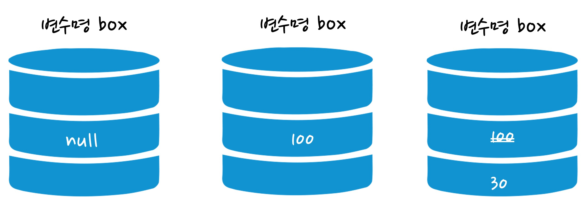
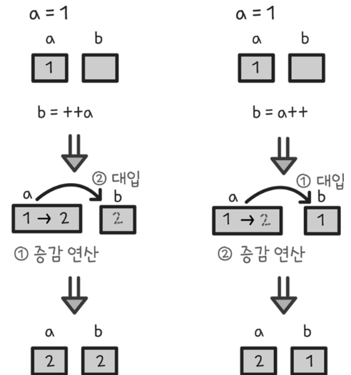

변수와 연산자
1. 상수와 변수
-
상수(constant)의 개념 및 선언
-
상수는 항상 같은 수라는 의미로 값에 이름을 한 번 붙이면 값을 수정할 수 없음
-
상수를 만드는 과정은 선언이라고 표현하고, const 키워드를 사용하여 선언
- 기본형:
const 이름 = 값
- 기본형:
-
상수를 만든 뒤에는 상수 이름을 사용해서 자료를 사용 가능
-
자주 발생하는 오류
- "Uncaught SyntaxError: Missing initializer in const declaration"
→ 상수는 선언할 때 반드시 값을 함께 지정 - "TypeError: Assignment to constatn variable"
→ 한 번 선언된 상수의 자료를 변경할 수 없음
예제 코드 보기/숨기기(클릭)
//Chrome 창에서 개발자도구(F12) > Console 탭 활용 실습 const pi //왜 오류가 뜰까요? const pi = 3.141592 pi pi = 3.14 //왜 오류가 뜰까요? - "Uncaught SyntaxError: Missing initializer in const declaration"
-
-
변수(variable)의 개념 및 선언
-
변수는 변하는 데이터(값)를 저장할 수 있는 메모리 공간으로 오직 한 개만 저장

-
변수를 만들 때는 let 키워드를 사용하고, 기본적인 사용 방법은 상수와 같음
- 기본형:
let 변수명 또는 let 변수명 = 값
예제 코드 보기/숨기기(클릭)
//Chrome 창에서 개발자도구(F12) > Console 탭 활용 실습 let box; box = 100; box = 30; document.write(box); - 기본형:
-
-
변수명 설정 방법
-
한글을 사용할 수 없으며, 영문과 숫자 그리고 일부 특수문자(_, $)만 사용 가능
- 잘못된 예:
let 1num = 10; - 올바른 예:
let $snum = 10;
- 잘못된 예:
-
첫 글자로 숫자를 사용할 수 없고, 예약어(document, location, window 등)를 식별자로 사용할 수 없음
- 잘못된 예:
let document = 10; - 올바른 예:
let num = 10;
- 잘못된 예:
-
변수의 의미를 알 수 있도록 일정한 표기법을 사용
-
카멜 표기법(camelCase)
- 두 번째 이후 단어의 대문자 부분이 낙타의 혹처럼 보인다고 해서 지어진 이름으로 두 번째 이후 단어의 첫 글자를 대문자로 표기
- 사용 예: newName, createLifeGame
-
파스칼 표기법(PascalCase)
- 프로그래밍 언어 파스칼에서 사용된 표기법으로 각 단어의 첫 글자를 모두 대문자로 표기
- 사용 예: NewName, CreateLifeGame
-
스네이크 표기법(snake_case)
- 모든 단어를 소문자로 표기하며, 단어 사이사이에 언더바(_)를 넣어 표기
- 사용 예: new_name, create_life_game
-
-
-
변수에 저장할 수 있는 자료형
-
문자형(string)
- 사용할 문자나 숫자를 큰따옴표 또는 작은따옴표로 감싸서 선언
-
숫자형(number)
- 단어 의미 그대로 숫자를 의미(큰따옴표로 감싸진 숫자는 숫자가 아닌 문자형 데이터)
-
논리형(boolean)
- 주로 2개의 데이터를 비교할 때 나오는 결과로 참(true)과 거짓(false)이 있음
-
null & undefined
- Null은 변수에 저장된 값이 null인 경우, undefined는 변수에 값이 등록되기 전의 기본값
-
typeof
- 지정한 데이터 또는 변수에 저장된 자료형을 알고 싶을 때 사용
-
2. 연산자(Operator)
-
연산자란?
-
빼기, 더하기, 곱하기, 나누기, 비교 등을 하는 일련의 작업을 연산작업이라 함
-
연산자는 연산을 수행하는 기호를 의미하고, 피연산자는 연산에 참여하는 변수나 상수의 값을 의미
-
-
산술연산자
- 연산을 하기 위해서는 연산 대상 데이터가 반드시 2개 있어야 함
종류 기본형 설명 + A + B 더하기 - A - B 빼기 * A * B 곱하기 / A / B 나누기 % A % B 나머지 - 연산을 하기 위해서는 연산 대상 데이터가 반드시 2개 있어야 함
-
문자 결합 연산자
-
여러 개의 문자를 하나의 문자형 데이터로 결합할 때 사용
-
더하기에 피연산자로 문자형 데이터가 한 개라도 포함되어 있으면 다른 피연산자의 데이터는 자동으로 문자형으로 형 변환
- 문자형 데이터 + 문자형 데이터 = 하나의 문자형 데이터
- 문자형 데이터 + 숫자형 데이터 = 하나의 문자형 데이터
예제 코드 보기/숨기기(클릭)
//Chrome 창에서 개발자도구(F12) > Console 탭 활용 실습 let t1 = "학교종이"; let t2 = "땡땡땡"; let t3 = 8282; let t4 = "어서 모이자"; let result result = t1 + t2 + t3 + t4; typeof(result)
-
-
대입 연산자
-
대입 연산자(
=)는 연산된 데이터를 변수에 저장할 때 사용 -
복합 대입 연산자(
-=, +=, *=, /=, %=)는 산술 연산자와 대입 연산자가 복합적으로 적용된 것
종류 설명 A = B A = B A += B A = A + B A -= B A = A - B A *= B A = A * B A /= B A = A / B A %= B A = A % B
예제 코드 보기/숨기기(클릭)
```JavaScript //Visual Studio Code에서 실습 let num1 = 10; let num2 = 3; num1 += num2; //num1 = 10 + 3 = 13 document.write(num1, "<br>"); num1 -= num2; //num1 = 13 - 3 = 10 document.write(num1, "<br>"); num1 *= num2; //num1 = 10 * 3 = 30 document.write(num1, "<br>"); num1 /= num2; //num1 = 30 / 3 = 10 document.write(num1, "<br>"); num1 %= num2; //num1 = 10 % 3 = 1 document.write(num1, "<br>"); ``` -
-
증감 연산자
-
숫자형 데이터를 1씩 증가시키는 증가 연산자(
++)와 반대로 1씩 감소시키는 감소 연산자(--)가 있음 -
피 연산자가 한 개만 필요한 단항 연산자
-
증감 연산자는 변수의 어느 위치에 오는가에 따라 결과값이 달라짐
- 기본형:
++변수, 변수++, --변수, 변수--

- 기본형:
예제 코드 보기/숨기기(클릭)
//Visual Studio Code에서 실습 let num1 = 10; let num2 = 20; let result; result = ++num1; //num1이 원래 10인데 ++가 앞에 있으므로 1을 증가시키고 result에 대입 document.write(result, "<br>"); result = num1++; //위의 결과에서 num1이 11로 바뀌고 ++가 뒤에 있으므로 바로 result에 대입 document.write(result, "<br>"); result = --num2; //num1이 원래 20인데 --가 앞에 있으므로 1을 감소시키고 result에 대입 document.write(result, "<br>"); //result 추가 복사해서 왜 그런지 살펴보기!! result = num2--; //위의 결과에서 num2가 19로 바뀌고 --가 뒤에 있으므로 바로 result에 대입 document.write(result, "<br>"); -
-
비교 연산자
- 두 데이터를 비교할 때 사용하는 연산자로 결과값은 true(참), false(거짓)로 논리형 데이터를 반환
종류 설명 비고 A > B A가 B보다 크다. A < B A가 B보다 작다. A >= B A가 B보다 크거나 같다. A <= B A가 B보다 작거나 같다. A == B A와 B는 같다. 숫자의 자료형에 상관없이 결과 반환 A != B A와 B는 다르다. 숫자의 자료형에 상관없이 결과 반환 A ===B A와 B는 같다. 반드시 표기된 숫자와 자료형이 일치해야만 결과 반환 A !==B A와 B는 다르다. 반드시 표기된 숫자와 자료형이 일치해야만 결과 반환
예제 코드 보기/숨기기(클릭)
//Visual Studio Code에서 실습 let a = 10; let b = 20; let c = 30; let d = "10"; let result; result = a > b; //10 > 20이므로 false document.write(result, "<br">); result = a < b; //10 < 20이므로 true document.write(result, "<br">); result = a <= b; //10 <= 20이므로 true document.write(result, "<br">); result = a == d; //10 == "10" 자료형 무시하므로 true document.write(result, "<br">); result = a === d; //10 == "10" 자료형 불일치로 false document.write(result, "<br">); - 두 데이터를 비교할 때 사용하는 연산자로 결과값은 true(참), false(거짓)로 논리형 데이터를 반환
-
논리 연산자
- 피 연산자가 논리형 데이터인 true, false로 결과값을 반환
종류 설명 ||or 연산자로 피 연산자 중 값이 하나라도 true가 존재하면 true로 결과값을 반환 &&and 연산자로 피 연산자 중 값이 하나라도 false가 존재하면 false로 결과값을 반환 !not 연산자로 피 연산자의 값이 true면 반대로 false로 결과값을 반환
예제 코드 보기/숨기기(클릭)
//Visual Studio Code에서 실습 let a = 10; let b = 20; let c = 30; let d = "10"; let result; result = a > b || b <= c; // false || true = true (or 연산자) document.write(result, "<br>"); result = b >= a && a < c; // true || true = true (and 연산자) document.write(result, "<br>"); result = a == d //true = true document.write(result, "<br>"); result = a !== d //false = true (not 연산자) document.write(result, "<br>"); - 피 연산자가 논리형 데이터인 true, false로 결과값을 반환
-
삼항 조건 연산자
-
연산한 결과 조건식의 만족 여부(true 또는 false)에 따라 코드를 다르게 실행하고자 할 때 사용
-
연산을 위해 피연산자가 3개 필요
- 기본형:
조건형 ? 코드 1 : 코드 2
- 기본형:
예제 코드 보기/숨기기(클릭)
//Visual Studio Code에서 실습 let a = 10; let b = 20; let result; result = a > b ? "크다" : "작다"; document.write(result); -
-
연산자 우선순위
-
여러 개의 연산자를 사용할 때 연산자의 종류에 따라 연산 시 우선 순위가 부여됨
-
( ) → 단항 연산자(--, ++, !) → 산술 연산자(+, -, *, /, %) → 비교 연산자(>, >=, <, <=, ==, ===, !==, !=) → 논리연산자(&&, ||) → 대입 연산자(=, +=, -=, *=, /=, %=)
-
-
총 정리 실습(적정 체중을 구하는 테스트기 만들기)
-
적정 체중 계산법
- 적정체중 = (본인 신장 - 100) * 0.9
-
적정 체중을 계산하면 다음과 같이 결과가 나오도록 코딩
- 신장: 180(cm)
- 체중: 74(kg)
- 적정 체중: (180 – 100) * 0.9
- 결과: 적정 체중이 숫자로 나타남
- 신장: 180(cm)
-
신장과 체중은 사용자의 신장과 체중에 따라 값이 변하므로 변수에 저장해야 함
-
신장이 바뀌면 적정 체중도 바뀌므로 변수에 저장해야 함
정답 코드 보기/숨기기(클릭)
let userHeight = 180; let userWeight = 74; let normalWeight = (userHeight - 100) * 0.9; document.write(normalWeight); -
페이지를 방문한 방문자가 질의응답 창에 자신의 신장 값을 입력하면 적정 체중을 구해주는 코드를 작성
-
질의응답 창은 방문자에게 질문을 던져 응답을 받아올 수 있는 창으로 prompt() 메서드를 사용
- 기본형: prompt("질문", "기본 응답");
- prompt 매서드는 기본적으로 문자를 반환하지만 자바스크립트가 자동으로 숫자로 변환해 줌
- 가끔 자동으로 형 변환이 안되는 경우 발생하는데 이 때는 Number()로 숫자로 변환
-
질의응답 창을 이용해 방문자의 이름, 신장, 체중을 입력 받은 후 적정 평균 체중을 구함
-
적정 평균 체중의 오차는 ±5이며 계산 결과 방문자가 적정 체중인지 아닌지에 따라 화면에 다르게 출력
- 적정 체중일 경우: "000님은 적정 체중입니다"
- 적정 체중이 아닐 경우: "000님은 적정 체중이 아닙니다"
코드 보기/숨기기(클릭)
let userName = prompt("당신의 이름은?", ""); let userHeight = prompt("당신의 신장은?", "0"); let userWeight = prompt("당신의 체중은?", "0"); <!-- 주의사항 산술연산자 빼기 입력 시 오류가 나면 숫자키패드에서 입력 --> let normalWeight = (userHeight – 100) * 0.9; let rangeNormal let result rangeNormal = userWeight >= normalWeight - 5 && userWeight <= normalWeight + 5; result = result ? "적정 체중입니다." : "적정 체중이 아닙니다."; document.write(userName + "님은" + " " + result);
-
박국토의 하루 지출 내역이 다음과 같다고 할 때, 하루 지출 비용의 합계를 구한 후 적정 지출 비용의 초과 여부를 출력해 봅시다.
- 박국토의 하루 지출 내용은 교통비 3,000원, 식비 8,000원, 음료비 6,000원입니다. 삼항 조건 연산자를 사용하여 하루 적정 지출 비용인 1만 원을 초과했을 경우에는 "000원 초과"라고 출력하고, 아닐 경우에는 "돈 관리 참 잘했어요!"라고 출력해 봅시다.
- 박국토의 하루 지출 내용은 교통비 3,000원, 식비 8,000원, 음료비 6,000원입니다. 삼항 조건 연산자를 사용하여 하루 적정 지출 비용인 1만 원을 초과했을 경우에는 "000원 초과"라고 출력하고, 아닐 경우에는 "돈 관리 참 잘했어요!"라고 출력해 봅시다.
정답 코드 보기/숨기기(클릭)
let traffic = 3000; let food = 8000; let drink = 6000; let result = traffic + food + drink; result = result > 10000? result-10000 + "원 초과" : "돈 관리 참 잘했어요!"; document.write(result); -